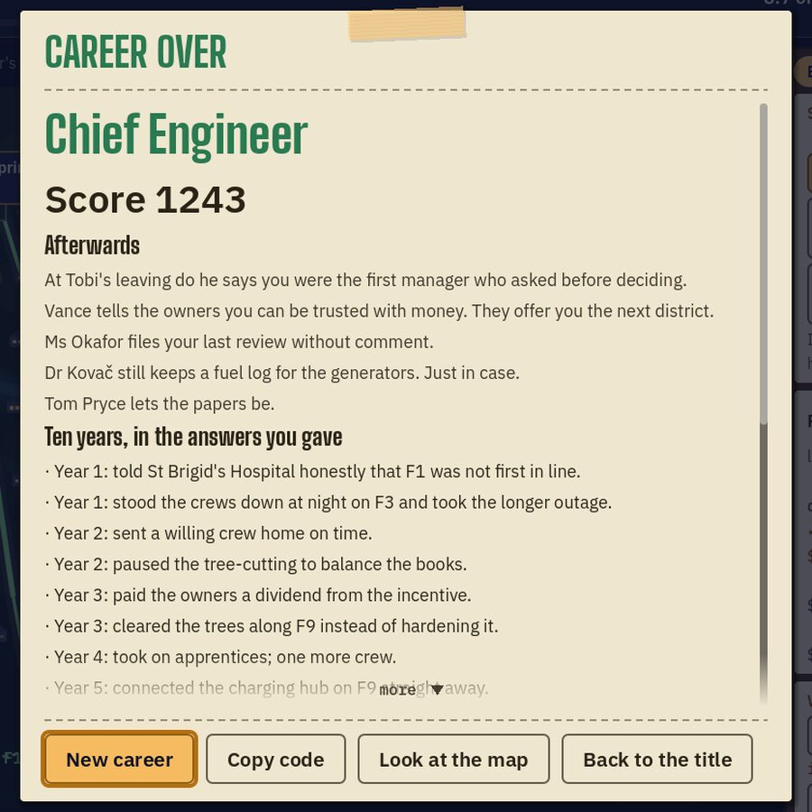

The story
Five people, ten years, and they remember
Letters land on your desk between projects. Each has two honest answers. Here is the first, from the hospital:
A letter from the hospital
Dr Ines Kovač, estates manager at St Brigid's Hospital: "Our generators carry the theatres for six hours. Feeder F1 has no tie and no remote switch, so a fault there is a long one. Will you commit, in writing, to a tie or a remote switch on F1 within two years?"
- Put it in writingYou signed. A tie or a remote switch on F1 by year 3. She pinned the letter above her desk.
- Decline, and tell her honestly where it ranksYou told her the truth: other feeders come first on the numbers. She thanked you for not pretending, and copied her board.
Each answer shows its cost before you press it. A promise in writing comes due two years later, and the people remember the answers.
- Tobi, crew chiefRuns the crews. Asks you to rest them, and remembers when you did not.
- Vance, financeFinance. Wants the cash to last and the owners paid.
- Ms Okafor, regulatorThe regulator. Judges your SAIDI and SAIFI, and your plans.
- Dr Ines Kovač, estates, St Brigid's HospitalKeeps the hospital running on its feeder.
- Cllr Tom Pryce, Ashby and ColdwaterSpeaks for the villages on the far feeder of the second primary.
